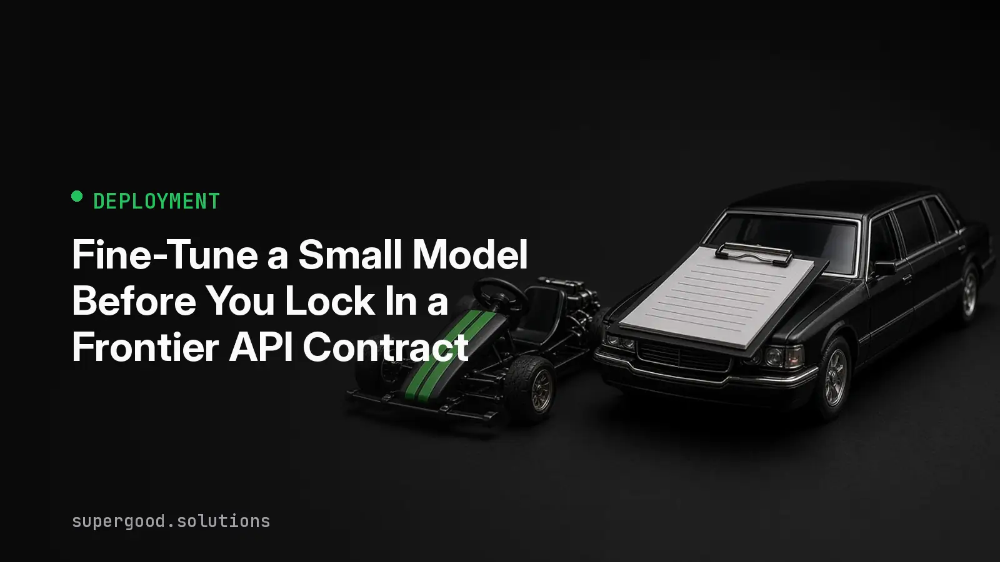

Fine-Tune a Small Model Before You Lock In a Frontier API Contract
TL;DR: For narrow, repeatable jobs like extraction and classification, a small model tuned on your own data usually beats a rented frontier model on accuracy and consistency. Test that before you sign a multi-year API commitment.
Key Insight
Most enterprise AI workloads are not open-ended reasoning. They are the same task, thousands of times a day: pull the fields out of this invoice, route this ticket, tag this contract clause. For that shape of work, "bigger is better" is the wrong default.
The evidence is public. The LoRA Land report fine-tuned 10 base models on 31 tasks, 310 models in total, using 4-bit low-rank adapters. On average the tuned models beat their untuned bases by 34 points and beat GPT-4 by 10 points. The standout was a 7B Mistral model, not a giant.
Two things drive that result. First, a tuned model has seen thousands of your real examples, so it learns your label set, your edge cases, and your formatting quirks. A frontier model has to infer all of that from a prompt every single call. Second, output stability. A model trained to emit one schema emits that schema. A general model asked politely for JSON will mostly comply, and "mostly" is what pages someone at 2 a.m.
This is pro-AI advice. The frontier API is still the right tool for messy, open-ended work and for prototyping. The point is to stop treating it as the permanent answer for tasks that have stopped changing.
Why Teams Miss This
Fine-tuning has a reputation problem. Two years ago it meant renting a GPU cluster, babysitting full-weight training runs, and storing a multi-gigabyte checkpoint per experiment. Plenty of teams wrote it off then and never reopened the question.
That cost structure is gone. Parameter-efficient methods such as LoRA freeze the base model and train small adapter matrices, and QLoRA does the same on a 4-bit quantized base. The Hugging Face PEFT library wraps this in a few lines, and a 7B-class model can be tuned on a single GPU. The adapter you produce is megabytes, not gigabytes, so you can keep one per task and swap them at serving time.
The second miss is sequencing. Teams sign the API contract first, build the workflow around it, and only then notice that the per-call price and the latency are baked into every downstream system. Switching later means re-validating everything.
How to Actually Do It
Start with the data you already have, because that is the real prerequisite.
- Pick one narrow task with a clear right answer, such as extracting 12 fields from vendor documents.
- Collect 500 to 2,000 examples of input and correct output. Your production logs plus human-corrected outputs from the frontier model are a good source.
- Hold out 20 percent as a test set before you train anything. Never tune on it.
- Tune a small open model with LoRA, then score it against the frontier model on the held-out set.
- Compare on three numbers: field-level accuracy, rate of malformed output, and cost per thousand calls.
A minimal setup with the PEFT and TRL libraries looks like this:
from peft import LoraConfig
from trl import SFTTrainer, SFTConfig
peft_config = LoraConfig(
r=16,
lora_alpha=32,
lora_dropout=0.05,
target_modules="all-linear",
task_type="CAUSAL_LM",
)
trainer = SFTTrainer(
model="mistralai/Mistral-7B-v0.3",
train_dataset=train_ds,
args=SFTConfig(output_dir="invoice-extractor", num_train_epochs=3),
peft_config=peft_config,
)
trainer.train()
trainer.save_model("invoice-extractor")Check the library docs for the current argument names, since TRL changes quickly. The shape stays the same: a base model, a small adapter config, and your examples.
Keep the frontier model in the loop as a fallback. Route low-confidence or schema-failing outputs from the small model to the big one, and log those cases. They become your next training batch.
What We've Learned
Fine-tuning is not free. You own the dataset, the eval harness, and retraining when the task drifts. If your task changes every month, or you have fewer than a few hundred good examples, keep paying for the API.
But the experiment is cheap now. Before your next renewal or commitment, pick your single highest-volume extraction or classification job and run the five steps above in a week. If the small model matches the frontier model on your held-out set, you have a negotiating position and a cheaper, steadier production path. If it does not, you have a clean eval that justifies the contract.
Sources
- LoRA Land: 310 Fine-tuned LLMs that Rival GPT-4, A Technical Report: arxiv.org/abs/2405.00732
- LoRA Land overview: Rubrik blog post on LoRA Land
- Hugging Face PEFT documentation: PEFT index
- Hugging Face PEFT LoRA conceptual guide: LoRA guide
- QLoRA: Efficient Finetuning of Quantized LLMs: arxiv.org/abs/2305.14314
Have a specific workflow in mind?
Bring it to a Quick Scan — a live working session where we'll tell you honestly whether it should be an agent, a workflow, or left alone, before you spend a dollar building it. You get 3 prioritized recommendations on the call, a one-page summary after, and the $1,000 credited toward a build if you sign within 14 days.
Get new posts + practical agent-ops notes
One email when something new goes up. No nurture sequence, no spam — unsubscribe whenever you want.